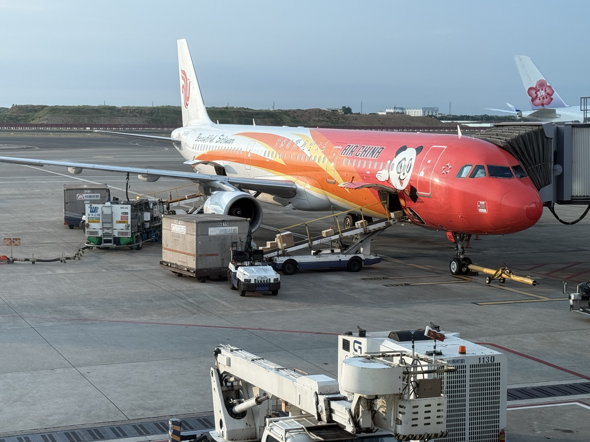
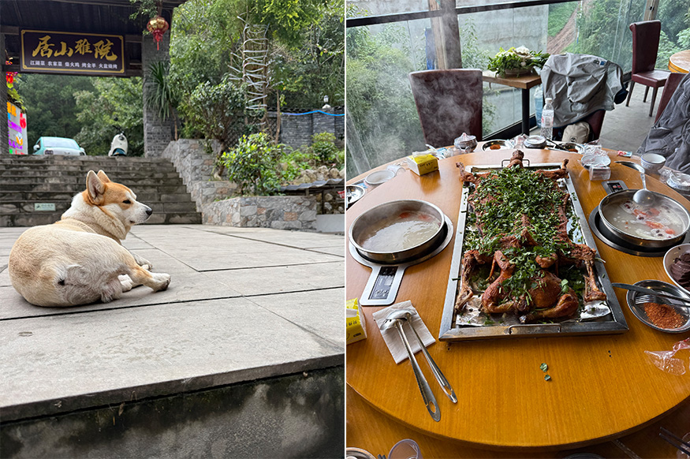
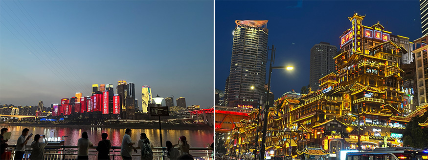
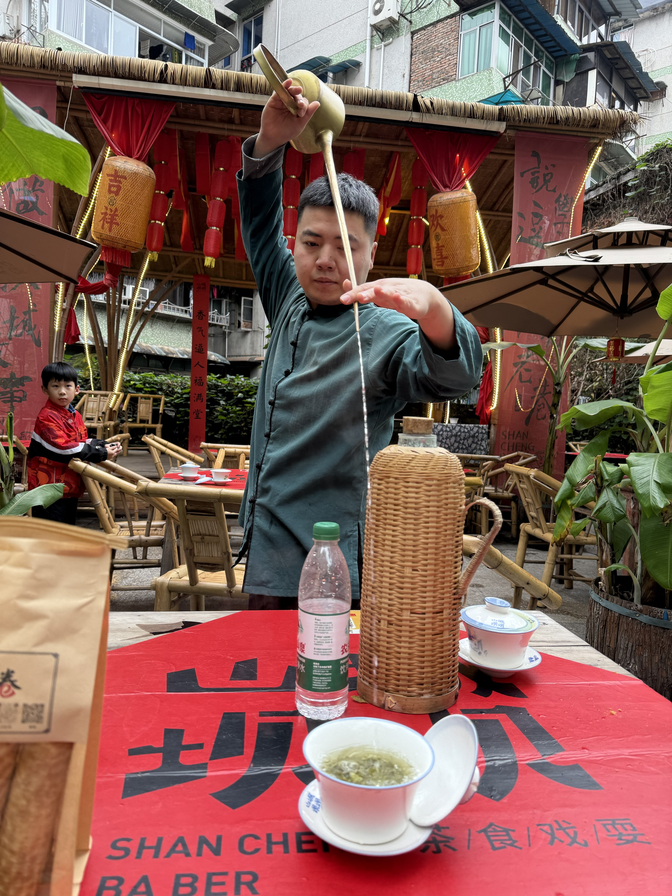
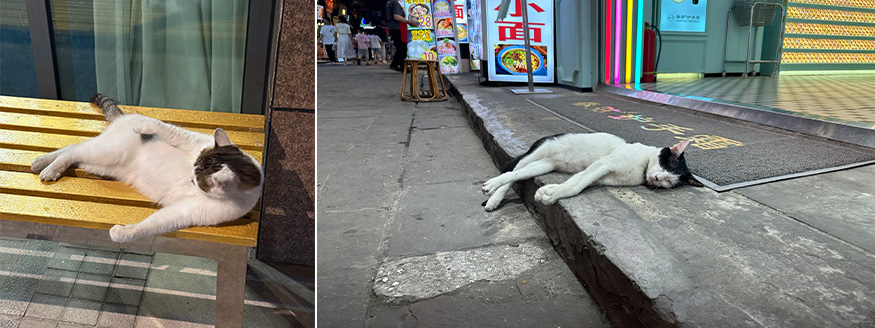
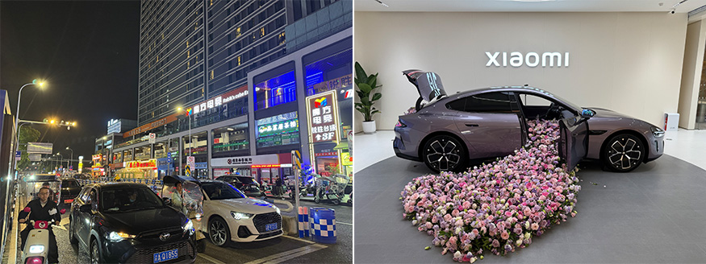

重慶是一座交織著魔幻魔都、江湖美食與街角愜意的美麗山城。
旅行的意義往往不在於抵達了多麼遙遠的名勝，而是在於將自己投身於一個截然不同的生活節奏中，感受另一座城市的呼吸與脈搏。
這次的重慶行從踏上航班那一刻起，預示著一場關於視覺、味覺與心靈的立體探索之旅。重慶這座高低起伏、江水環繞的夢幻山城，以其獨特的江湖氣息，給了我一段難以忘懷的夏日記憶。
登上中國國際航空的客機,看著機翼在窗外劃過雲層，心中充滿了對這美麗山城的期待，在降落前空服員也會快速介紹必玩景點，歡迎大家蒞臨美麗山城。重慶之所以被稱為「美麗山城」是因為其獨特的地形塑造了絕無僅有的城市景觀。導航在這裡常常失靈，一樓可能是廣場，二十樓出門依然是馬路，這種打破常規的三維空間感。
 |
經過 3 個多小時的飛行，降落重慶江北國際機場。從機場前往市區的途中，層層疊疊的立交橋與穿梭於山谷間的高樓，徹底拉開了這場山城冒險的序幕。
談到重慶，美食永遠是無法繞過的重頭戲。除了名揚四海的麻辣火鍋外，重慶的「江湖菜」與特色山野農家菜更是藏著這座城市的靈魂。抵達的隔天中午，我們來到沙坪壩山間的「居山雅院」，體驗了一頓令人震撼的豪邁盛宴。
圓桌中央擺放著整隻烤得金黃酥脆的烤全羊，上面撒滿了新鮮香菜與特製的辣椒孜然香料，外皮焦香、肉質嫩滑多汁，每一口都是對味蕾的極致誘惑。兩側配以滾燙的湯鍋與新鮮蔬菜，熱氣蒸騰間，滿桌歡聲笑語。這種豪爽大氣的飲食方式，完美詮釋了重慶人豪爽、不拘小節的「江湖性格」。
 |
餐廳環境幽靜，古色古香的石階與門樓讓人瞬間遠離了都市喧囂。在門口，一隻可愛的柯基慵懶地趴在石板地上，對往來的食客早已習以為常，那份從容與愜意，恰好是重慶山林慢生活的縮影。
 |
當夜幕低垂，重慶展現出了它最絢麗迷人的另一面。這座城市的夜景，足以媲美世界上任何一座頂級大都市，但又多了一份獨一無二的立體錯落感。
漫步至洪崖洞，眼前的建築群沿著懸崖依山而建，層層疊疊的木質吊腳樓在璀璨金黃的燈光映照下，彷彿讓人瞬間穿越到了宮崎駿動畫《神隱少女》中的湯屋世界。站在江邊遠眺，對岸的摩天大樓亮起璀璨的燈光，紅色的標語與繽紛的視覺效果倒映在長江與嘉陵江的水面上，光影交錯，令人目不暇給。
 |
如果說洪崖洞與璀璨夜景代表了重慶的繁華與奇幻，那麼深入巷弄的老街與茶館，則記錄了這座城市最真實、最接地氣的人間煙火。
在茶館，我們坐下來品嚐了一碗道地的蓋碗茶。茶藝師手持長嘴銅壺，身法輕盈、動作瀟灑地將沸水準確注入茶碗中，茶香隨之撲鼻而來。坐在竹椅上，聽著身邊老重慶人聊天談笑，這種悠閒自得的「慢生活」，與街外繁忙的城市節奏形成了鮮明的對比。
 |
行走在重慶的街頭巷尾，最令人驚喜的是那些無所不在的可愛小生命。在一家賣重慶小麵的店家門前，一隻黑白相間的小貓正趴在台階上沉沉睡去，絲毫不受旁邊喧囂人聲的影響。夜間的長椅上，另一隻花貓伸著懶腰，展現出無拘無束的自在。這些街角的小可愛，為這座硬朗的鋼筋水泥大樓注入了無數溫柔與生機。
 |
重慶也是一座傳統與現代、科技與生活完美融合的城市。在繁華的商圈，有魔方電競、台球茶樓等豐富多彩的夜生活場所，也能看到引領未來趨勢的科技展示。在小米旗艦店內，最新的 SU7 電動車以浪漫的粉色花海裝飾亮相，車門與後備箱傾瀉而出的花朵，將工業科技與藝術美學結合得恰到好處，吸引了無數人駐足拍照。
這一次也前往體驗了一把重慶湯泉，真的是在台灣無法體驗到的慵懶與舒適。
短短幾天的重慶之旅，充實而又令人難忘。從雲端降落到山城，從豪邁的烤全羊到清香的蓋碗茶，從洪崖洞的璀璨燈火到街角沉睡的貓咪，這座城市以其無窮的魅力深深打動了我。
重慶不僅僅是一座有著獨特地形的熱門旅遊城市，更是一個充滿人情味與生命力的精神家園。當重新收拾行囊準備踏上歸途時，心中充滿了不捨。那些穿梭於陡峭坡道的記憶、那股舌尖上的麻辣鮮香，以及山城夜色中的萬家燈火，都將成為我記憶深處最寶貴的收藏。
山城重慶，期待下一次相遇！